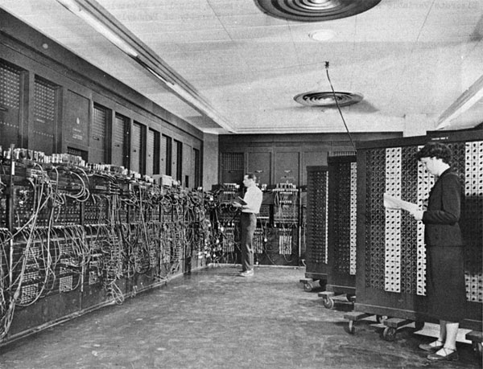

In 1837, Charles Babbage proposed the first general mechanical computer, the Analytical Engine. The Analytical Engine contained an Arithmetic Logic Unit (ALU), basic flow control, and integrated me memory and is the first general-purpose computer concept. Unfortunately, because of funding issues, this computer was also never built while Charles Babbage was alive. In 1910, Henry Babbage, Charles Baggages youngest son, was able to complete a portion of the machine and was able to perform basic calculations. German Konrad Zuse in his parents’ living room between 1936 and 1938. It is considered to be the first electro-mechanical binary programmable computer, and the first really functional modern computer.
When was the first computer invented? There is no easy answer to this question due to the many different classifications of computers. The first mechanical computer, created by Charles Babbage in 1822, doesn’t really resemble what most would consider a computer today. therefore, this document has been created with a listing of each of the computer firsts, starting with the Difference Engine and leading up to the computers we use today.
The word “computer” was first recorded as being used 1613 and originally was used to describe a human who performed calculations or computations. The definition of a computer remained the same until the end of the 19th century, when the industrial revolution gave rise to machines whose primary purpose was calculating.

In 1822, Charles Babbage conceptualized and began developing the Difference Engine, considered to be the first automatic computing machine. The Difference Engine was capable of computing several sets of numbers and making hard copies of the results. Babbage received some help with development of the Difference Engine from Ada Lovelace, considered by many to be the first computer programmer for her work and notes on the Difference Engine. Unfortunately, because of funding, babbage was never able to complete a full scale functional version of this machine. In june of 1991, the london Science Museum completed the Difference Engine No 2 for the bicentennial year of Babbage’s birth and later completed the printing mechanism in 2000.
The was first proposed by Alan Turing in 1936 and became the foundation for the theories about computing and computers. The machine was a device that printed symbols on paper tape in manner that emulated a person following a series of logical instructions. Without these fundamentals, we wouldn’t have the computers we use today. The colossus was the first electronic programmable computer, developed by Tommy Flowers, and first demonstrated in December 1943. The Colossus was created to help the British code breakers read German messages.
Short for Atanasoff_Berry Compuser, the ABC began development by Professor John Vincent Atanasoff and graduate student Cliff Berry in 1937 Its development continued until 1942 at the Iowa State College (now Iowa State University).
The ENIAC was invented by J. Presper Eckert and John Mauchly at the University of Pennsylvania and began construction in 1943 and was not completed until 1946. It occupied about 1,800 square feet and used about 18,000 vacuum tubes, weighing almost 50 tons. Although the Judge ruled that the ABC computer was the first digital computer, many still consider the ENIAC to be the first digital computer because it was fully functional. The early British computer computer known as EDSAC is considered to be the first stored program electronic computer. The computer performed its first calculation on May 6, 1949 and was the computer that ran the first graphical computer game, nicknamed “baby”. Around the same time, the Manchester Mark 1 was another computer that could run stored programs. Built at the Victoria University of Manchester, the first version of the Mark 1 computer became operational in April 1949. Mark 1 was used to run a program to search for Mersenne primes for nine hours without error on June 16 and 17 that same year. The first computer company was the Electronic Control Company and was founded in 1949 by J.Presper Eckert and John Mauchly, the same individuals who helped create the ENIAC computer. The company was later renamed to EMCC or Eckert-Mauchly Computer corporation and released series of mainframe computers under the UNIVAC name. First delivered to the United States government in 1950, the UNIVAC 1101 or ERA 1101 is considered to be the first computer that was capable of storing and running a program from memory.

In 1942, Konrad Zuse begin working on the Z4 that later became the first commercial computer. The computer was sold to Eduard Stefel, a mathematician of Swiss Federal Institute of Technology Zurich on July 12,1950. On April 7, 1953 IBM publicly introduced the 701; its first commercial scientific computer. MIT introduces the Whirlwind machine on March 8, 1955, a revolutionary computer that was the first digital computer with magnetic core RAM and real-time graphics. The TX-O (Transistorized Experimental computer) is the first transistorized computer to be demonstrated at the Massachusetts Institute of Technology in 1956. In 1964,Digital Equipment Corporation released its first of many PDP computers, the PDP-1. The first desktop and mass-market computer In 1964, the first desktop computer, the Programma 101, was unveiled to the public at the New York World’s Fair. I was invented by Pier Giorgio perotto and manufactured by Olivetti. About 44,000 Programma 101 computers were sold, each with a price tag of $3,200.